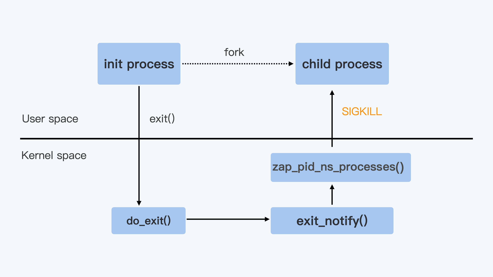

- 00 开篇词 一个态度两个步骤，成为容器实战高手.md.html
- 01 认识容器：容器的基本操作和实现原理.md.html
- 02 理解进程（1）：为什么我在容器中不能kill 1号进程？.md.html
- 03 理解进程（2）：为什么我的容器里有这么多僵尸进程？.md.html
- 04 理解进程（3）：为什么我在容器中的进程被强制杀死了？.md.html
- 05 容器CPU（1）：怎么限制容器的CPU使用？.md.html
- 06 容器CPU（2）：如何正确地拿到容器CPU的开销？.md.html
- 07 Load Average：加了CPU Cgroup限制，为什么我的容器还是很慢？.md.html
- 08 容器内存：我的容器为什么被杀了？.md.html
- 09 Page Cache：为什么我的容器内存使用量总是在临界点.md.html
- 10 Swap：容器可以使用Swap空间吗？.md.html
- 11 容器文件系统：我在容器中读写文件怎么变慢了.md.html
- 12 容器文件Quota：容器为什么把宿主机的磁盘写满了？.md.html
- 13 容器磁盘限速：我的容器里磁盘读写为什么不稳定.md.html
- 14 容器中的内存与IO：容器写文件的延时为什么波动很大？.md.html
- 15 容器网络：我修改了procsysnet下的参数，为什么在容器中不起效？.md.html
- 16 容器网络配置（1）：容器网络不通了要怎么调试.md.html
- 17 容器网络配置（2）：容器网络延时要比宿主机上的高吗.md.html
- 18 容器网络配置（3）：容器中的网络乱序包怎么这么高？.md.html
- 19 容器安全（1）：我的容器真的需要privileged权限吗.md.html
- 20 容器安全（2）：在容器中，我不以root用户来运行程序可以吗？.md.html
- 加餐01 案例分析：怎么解决海量IPVS规则带来的网络延时抖动问题？.md.html
- 加餐02 理解perf：怎么用perf聚焦热点函数？.md.html
- 加餐03 理解ftrace（1）：怎么应用ftrace查看长延时内核函数？.md.html
- 加餐04 理解ftrace（2）：怎么理解ftrace背后的技术tracepoint和kprobe？.md.html
- 加餐05 eBPF：怎么更加深入地查看内核中的函数？.md.html
- 加餐06 BCC：入门eBPF的前端工具.md.html
- 加餐福利 课后思考题答案合集.md.html
- 结束语 跳出舒适区，突破思考的惰性.md.html
04 理解进程（3）：为什么我在容器中的进程被强制杀死了？
你好，我是程远。
今天我们来讲容器中 init 进程的最后一讲，为什么容器中的进程被强制杀死了。理解了这个问题，能够帮助你更好地管理进程，让容器中的进程可以 graceful shutdown。
我先给你说说，为什么进程管理中做到这点很重要。在实际生产环境中，我们有不少应用在退出的时候需要做一些清理工作，比如清理一些远端的链接，或者是清除一些本地的临时数据。
这样的清理工作，可以尽可能避免远端或者本地的错误发生，比如减少丢包等问题的出现。而这些退出清理的工作，通常是在 SIGTERM 这个信号用户注册的 handler 里进行的。
但是，如果我们的进程收到了 SIGKILL，那应用程序就没机会执行这些清理工作了。这就意味着，一旦进程不能 graceful shutdown，就会增加应用的出错率。
所以接下来，我们来重现一下，进程在容器退出时都发生了什么。
场景再现
在容器平台上，你想要停止一个容器，无论是在 Kubernetes 中去删除一个 pod，或者用 Docker 停止一个容器，最后都会用到 Containerd 这个服务。
而 Containerd 在停止容器的时候，就会向容器的 init 进程发送一个 SIGTERM 信号。
我们会发现，在 init 进程退出之后，容器内的其他进程也都立刻退出了。不过不同的是，init 进程收到的是 SIGTERM 信号，而其他进程收到的是 SIGKILL 信号。
在理解进程的第一讲中，我们提到过 SIGKILL 信号是不能被捕获的（catch）的，也就是用户不能注册自己的 handler，而 SIGTERM 信号却允许用户注册自己的 handler，这样的话差别就很大了。
那么，我们就一起来看看当容器退出的时候，如何才能让容器中的进程都收到 SIGTERM 信号，而不是 SIGKILL 信号。
延续前面课程中处理问题的思路，我们同样可以运行一个简单的容器，来重现这个问题，用这里的代码执行一下 make image ，然后用 Docker 启动这个容器镜像。
docker run -d --name fwd_sig registry/fwd_sig:v1 /c-init-sig
你会发现，在我们用 docker stop 停止这个容器的时候，如果用 strace 工具来监控，就能看到容器里的 init 进程和另外一个进程收到的信号情况。
在下面的例子里，进程号为 15909 的就是容器里的 init 进程，而进程号为 15959 的是容器里另外一个进程。
在命令输出中我们可以看到，init 进程（15909）收到的是 SIGTERM 信号，而另外一个进程（15959）收到的果然是 SIGKILL 信号。
# ps -ef | grep c-init-sig
root 15857 14391 0 06:23 pts/0 00:00:00 docker run -it registry/fwd_sig:v1 /c-init-sig
root 15909 15879 0 06:23 pts/0 00:00:00 /c-init-sig
root 15959 15909 0 06:23 pts/0 00:00:00 /c-init-sig
root 16046 14607 0 06:23 pts/3 00:00:00 grep --color=auto c-init-sig
# strace -p 15909
strace: Process 15909 attached
restart_syscall(<... resuming interrupted read ...>) = ? ERESTART_RESTARTBLOCK (Interrupted by signal)
--- SIGTERM {si_signo=SIGTERM, si_code=SI_USER, si_pid=0, si_uid=0} ---
write(1, "received SIGTERM\n", 17) = 17
exit_group(0) = ?
+++ exited with 0 +++
# strace -p 15959
strace: Process 15959 attached
restart_syscall(<... resuming interrupted read ...>) = ?
+++ killed by SIGKILL +++
知识详解：信号的两个系统调用
我们想要理解刚才的例子，就需要搞懂信号背后的两个系统调用，它们分别是 kill() 系统调用和 signal() 系统调用。
这里呢，我们可以结合前面讲过的信号来理解这两个系统调用。在容器 init 进程的第一讲里，我们介绍过信号的基本概念了，信号就是 Linux 进程收到的一个通知。
等你学完如何使用这两个系统调用之后，就会更清楚 Linux 信号是怎么一回事，遇到容器里信号相关的问题，你就能更好地理清思路了。
我还会再给你举个使用函数的例子，帮助你进一步理解进程是如何实现 graceful shutdown 的。
进程对信号的处理其实就包括两个问题，一个是进程如何发送信号，另一个是进程收到信号后如何处理。
我们在 Linux 中发送信号的系统调用是 kill()，之前很多例子里面我们用的命令 kill ，它内部的实现就是调用了 kill() 这个函数。
下面是 Linux Programmer’s Manual 里对 kill() 函数的定义。
这个函数有两个参数，一个是 sig，代表需要发送哪个信号，比如 sig 的值是 15 的话，就是指发送 SIGTERM；另一个参数是 pid，也就是指信号需要发送给哪个进程，比如值是 1 的话，就是指发送给进程号是 1 的进程。
NAME
kill - send signal to a process
SYNOPSIS
# include <sys/types.h>
# include <signal.h>
int kill(pid_t pid, int sig);
我们知道了发送信号的系统调用之后，再来看另一个系统调用，也就是 signal() 系统调用这个函数，它可以给信号注册 handler。
下面是 signal() 在 Linux Programmer’s Manual 里的定义，参数 signum 也就是信号的编号，例如数值 15，就是信号 SIGTERM；参数 handler 是一个函数指针参数，用来注册用户的信号 handler。
NAME
signal - ANSI C signal handling
SYNOPSIS
# include <signal.h>
typedef void (*sighandler_t)(int);
sighandler_t signal(int signum, sighandler_t handler);
在容器 init 进程的第一讲里，我们学过进程对每种信号的处理，包括三个选择：调用系统缺省行为、捕获、忽略。而这里的选择，其实就是程序中如何去调用 signal() 这个系统调用。
第一个选择就是缺省，如果我们在代码中对某个信号，比如 SIGTERM 信号，不做任何 signal() 相关的系统调用，那么在进程运行的时候，如果接收到信号 SIGTERM，进程就会执行内核中 SIGTERM 信号的缺省代码。
对于 SIGTERM 这个信号来说，它的缺省行为就是进程退出（terminate）。
内核中对不同的信号有不同的缺省行为，一般会采用退出（terminate），暂停（stop），忽略（ignore）这三种行为中的一种。
那第二个选择捕获又是什么意思呢?
捕获指的就是我们在代码中为某个信号，调用 signal() 注册自己的 handler。这样进程在运行的时候，一旦接收到信号，就不会再去执行内核中的缺省代码，而是会执行通过 signal() 注册的 handler。
比如下面这段代码，我们为 SIGTERM 这个信号注册了一个 handler，在 handler 里只是做了一个打印操作。
那么这个程序在运行的时候，如果收到 SIGTERM 信号，它就不会退出了，而是只在屏幕上显示出"received SIGTERM"。
void sig_handler(int signo)
{
if (signo == SIGTERM) {
printf("received SIGTERM\n");
}
}
int main(int argc, char *argv[])
{
...
signal(SIGTERM, sig_handler);
...
}
我们再来看看第三个选择，如果要让进程“忽略”一个信号，我们就要通过 signal() 这个系统调用，为这个信号注册一个特殊的 handler，也就是 SIG_IGN 。
比如下面的这段代码，就是为 SIGTERM 这个信号注册SIG_IGN。
这样操作的效果，就是在程序运行的时候，如果收到 SIGTERM 信号，程序既不会退出，也不会在屏幕上输出 log，而是什么反应也没有，就像完全没有收到这个信号一样。
int main(int argc, char *argv[])
{
...
signal(SIGTERM, SIG_IGN);
...
}
好了，我们通过讲解 signal() 这个系统调用，帮助你回顾了信号处理的三个选择：缺省行为、捕获和忽略。
这里我还想要提醒你一点， SIGKILL 和 SIGSTOP 信号是两个特权信号，它们不可以被捕获和忽略，这个特点也反映在 signal() 调用上。
我们可以运行下面的这段代码，如果我们用 signal() 为 SIGKILL 注册 handler，那么它就会返回 SIG_ERR，不允许我们做捕获操作。
# cat reg_sigkill.c
# include <stdio.h>
# include <stdlib.h>
# include <unistd.h>
# include <errno.h>
# include <signal.h>
typedef void (*sighandler_t)(int);
void sig_handler(int signo)
{
if (signo == SIGKILL) {
printf("received SIGKILL\n");
exit(0);
}
}
int main(int argc, char *argv[])
{
sighandler_t h_ret;
h_ret = signal(SIGKILL, sig_handler);
if (h_ret == SIG_ERR) {
perror("SIG_ERR");
}
return 0;
}
# ./reg_sigkill
SIG_ERR: Invalid argument
最后，我用下面这段代码来做个小结。
这段代码里，我们用 signal() 对 SIGTERM 这个信号做了忽略，捕获以及恢复它的缺省行为，并且每一次都用 kill() 系统调用向进程自己发送 SIGTERM 信号，这样做可以确认进程对 SIGTERM 信号的选择。
# include <stdio.h>
# include <signal.h>
typedef void (*sighandler_t)(int);
void sig_handler(int signo)
{
if (signo == SIGTERM) {
printf("received SIGTERM\n\n");
// Set SIGTERM handler to default
signal(SIGTERM, SIG_DFL);
}
}
int main(int argc, char *argv[])
{
//Ignore SIGTERM, and send SIGTERM
// to process itself.
signal(SIGTERM, SIG_IGN);
printf("Ignore SIGTERM\n\n");
kill(0, SIGTERM);
//Catch SIGERM, and send SIGTERM
// to process itself.
signal(SIGTERM, sig_handler);
printf("Catch SIGTERM\n");
kill(0, SIGTERM);
//Default SIGTERM. In sig_handler, it sets
//SIGTERM handler back to default one.
printf("Default SIGTERM\n");
kill(0, SIGTERM);
return 0;
}
我们一起来总结一下刚才讲的两个系统调用：
先说说 kill() 这个系统调用，它其实很简单，输入两个参数：进程号和信号，就把特定的信号发送给指定的进程了。
再说说 signal() 这个调用，它决定了进程收到特定的信号如何来处理，SIG_DFL 参数把对应信号恢复为缺省 handler，也可以用自定义的函数作为 handler，或者用 SIG_IGN 参数让进程忽略信号。
对于 SIGKILL 信号，如果调用 signal() 函数，为它注册自定义的 handler，系统就会拒绝。
解决问题
我们在学习了 kill() 和 signal() 这个两个信号相关的系统调用之后，再回到这一讲最初的问题上，为什么在停止一个容器的时候，容器 init 进程收到的 SIGTERM 信号，而容器中其他进程却会收到 SIGKILL 信号呢？
当 Linux 进程收到 SIGTERM 信号并且使进程退出，这时 Linux 内核对处理进程退出的入口点就是 do_exit() 函数，do_exit() 函数中会释放进程的相关资源，比如内存，文件句柄，信号量等等。
Linux 内核对处理进程退出的入口点就是 do_exit() 函数，do_exit() 函数中会释放进程的相关资源，比如内存，文件句柄，信号量等等。
在做完这些工作之后，它会调用一个 exit_notify() 函数，用来通知和这个进程相关的父子进程等。
对于容器来说，还要考虑 Pid Namespace 里的其他进程。这里调用的就是 zap_pid_ns_processes() 这个函数，而在这个函数中，如果是处于退出状态的 init 进程，它会向 Namespace 中的其他进程都发送一个 SIGKILL 信号。
整个流程如下图所示。

你还可以看一下，内核代码是这样的。
/*
* The last thread in the cgroup-init thread group is terminating.
* Find remaining pid_ts in the namespace, signal and wait for them
* to exit.
*
* Note: This signals each threads in the namespace - even those that
* belong to the same thread group, To avoid this, we would have
* to walk the entire tasklist looking a processes in this
* namespace, but that could be unnecessarily expensive if the
* pid namespace has just a few processes. Or we need to
* maintain a tasklist for each pid namespace.
*
*/
rcu_read_lock();
read_lock(&tasklist_lock);
nr = 2;
idr_for_each_entry_continue(&pid_ns->idr, pid, nr) {
task = pid_task(pid, PIDTYPE_PID);
if (task && !__fatal_signal_pending(task))
group_send_sig_info(SIGKILL, SEND_SIG_PRIV, task, PIDTYPE_MAX);
}
说到这里，我们也就明白为什么容器 init 进程收到的 SIGTERM 信号，而容器中其他进程却会收到 SIGKILL 信号了。
前面我讲过，SIGKILL 是个特权信号（特权信号是 Linux 为 kernel 和超级用户去删除任意进程所保留的，不能被忽略也不能被捕获）。
所以进程收到这个信号后，就立刻退出了，没有机会调用一些释放资源的 handler 之后，再做退出动作。
而 SIGTERM 是可以被捕获的，用户是可以注册自己的 handler 的。因此，容器中的程序在 stop container 的时候，我们更希望进程收到 SIGTERM 信号而不是 SIGKILL 信号。
那在容器被停止的时候，我们该怎么做，才能让容器中的进程收到 SIGTERM 信号呢？
你可能已经想到了，就是让容器 init 进程来转发 SIGTERM 信号。的确是这样，比如 Docker Container 里使用的 tini 作为 init 进程，tini 的代码中就会调用 sigtimedwait() 这个函数来查看自己收到的信号，然后调用 kill() 把信号发给子进程。
我给你举个具体的例子说明，从下面的这段代码中，我们可以看到除了 SIGCHLD 这个信号外，tini 会把其他所有的信号都转发给它的子进程。
int wait_and_forward_signal(sigset_t const* const parent_sigset_ptr, pid_t const child_pid) {
siginfo_t sig;
if (sigtimedwait(parent_sigset_ptr, &sig, &ts) == -1) {
switch (errno) {
}
} else {
/* There is a signal to handle here */
switch (sig.si_signo) {
case SIGCHLD:
/* Special-cased, as we don't forward SIGCHLD. Instead, we'll
* fallthrough to reaping processes.
*/
PRINT_DEBUG("Received SIGCHLD");
break;
default:
PRINT_DEBUG("Passing signal: '%s'", strsignal(sig.si_signo));
/* Forward anything else */
if (kill(kill_process_group ? -child_pid : child_pid, sig.si_signo)) {
if (errno == ESRCH) {
PRINT_WARNING("Child was dead when forwarding signal");
} else {
PRINT_FATAL("Unexpected error when forwarding signal: '%s'", strerror(errno));
return 1;
}
}
break;
}
}
return 0;
}
那么我们在这里明确一下，怎么解决停止容器的时候，容器内应用程序被强制杀死的问题呢？
解决的方法就是在容器的 init 进程中对收到的信号做个转发，发送到容器中的其他子进程，这样容器中的所有进程在停止时，都会收到 SIGTERM，而不是 SIGKILL 信号了。
重点小结
这一讲我们要解决的问题是让容器中的进程，在容器停止的时候，有机会 graceful shutdown，而不是收到 SIGKILL 信号而被强制杀死。
首先我们通过对 kill() 和 signal() 这个两个系统调用的学习，进一步理解了进程是怎样处理 Linux 信号的，重点是信号在接收处理的三个选择：忽略，捕获和缺省行为。
通过代码例子，我们知道 SIGTERM 是可以被忽略和捕获的，但是 SIGKILL 是不可以被忽略和捕获的。
了解这一点以后，我们就找到了问题的解决方向，也就是我们需要在停止容器时，让容器中的应用收到 SIGTERM，而不是 SIGKILL。
具体怎么操作呢？我们可以在容器的 init 进程中对收到的信号做个转发，发送到容器中的其他子进程。这样一来，容器中的所有进程在停止容器时，都会收到 SIGTERM，而不是 SIGKILL 信号了。
我认为，解决 init 进程信号的这类问题其实并不难。
我们只需要先梳理一下和这个问题相关的几个知识点，再写个小程序，让它跑在容器里，稍微做几个试验。然后，我们再看一下内核和 Docker 的源代码，就可以很快得出结论了。
思考题
请你回顾一下基本概念中最后的这段代码，你可以想一想，在不做编译运行的情况下，它的输出是什么？
# include <stdio.h>
# include <signal.h>
typedef void (*sighandler_t)(int);
void sig_handler(int signo)
{
if (signo == SIGTERM) {
printf("received SIGTERM\n\n");
// Set SIGTERM handler to default
signal(SIGTERM, SIG_DFL);
}
}
int main(int argc, char *argv[])
{
//Ignore SIGTERM, and send SIGTERM
// to process itself.
signal(SIGTERM, SIG_IGN);
printf("Ignore SIGTERM\n\n");
kill(0, SIGTERM);
//Catch SIGERM, and send SIGTERM
// to process itself.
signal(SIGTERM, sig_handler);
printf("Catch SIGTERM\n");
kill(0, SIGTERM);
//Default SIGTERM. In sig_handler, it sets
//SIGTERM handler back to default one.
printf("Default SIGTERM\n");
kill(0, SIGTERM);
return 0;
}
欢迎留言和我分享你的想法和疑问。如果读完这篇文章有所收获，也欢迎你分享给自己的朋友，共同学习和进步。